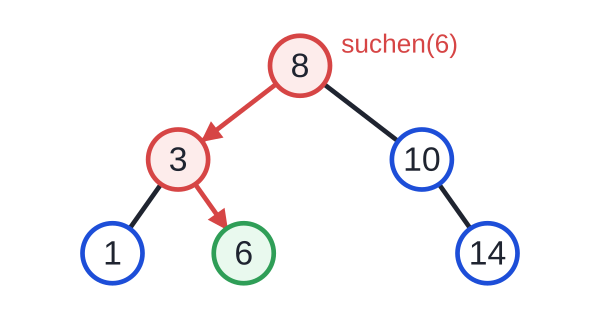

Beim Zahlenraten „Ich denke mir eine Zahl zwischen 1 und 100“ fragst du geschickt „Ist sie größer als 50?“ – und halbierst so mit jeder Antwort die Möglichkeiten. Ein binärer Suchbaum speichert Daten genau so, dass jede Suche wie dieses Ratespiel abläuft.
Diese Seite ist ein Lernpfad in vier kurzen Schritten. Jeder Schritt hat dieselbe Form: Erst liest du kurz, worum es geht, dann zeigt dir ein Video (1–2 min, ohne Ton) die Idee und den Code in Thonny, dann prüfst du mit einer kleinen Frage, ob du es verstanden hast. Halte die Videos ruhig an und tippe in Thonny mit.
Zum Mittippen: 2_baeume/suchbaum.py – neu anlegen.
Commit nach jedem Schritt mit Code, z. B. 3.5 Schritt 2: Suchbaum mit einfuegen · 3.5 Schritt 3: suchen ergänzt (Regeln auf Seite 3.0.2)
Danach findest du einen Praxisbezug und die Übungsaufgaben.
In einem Binärbaum hat jeder Knoten zwei Plätze: links und rechts. Ein binärer Suchbaum ordnet die Werte so, dass für jeden Knoten links nur Kleineres und rechts nur Größeres steht. Achte im Video darauf, dass die Regel für den gesamten Teilbaum gilt, nicht nur für die direkten Kinder.

Es genügt nicht, nur das direkte linke und rechte Kind zu prüfen. Der folgende Baum ist kein Suchbaum, obwohl bei jedem Knoten das linke Kind kleiner und das rechte größer ist: Die 12 steht im linken Teilbaum der 10, ist aber größer als 10.
10
/ \
5 15
\
12 <-- verletzt die Suchbaum-EigenschaftZum Nachlesen: der Baum aus dem Video in Beispiel 1.
Weiter mit Schritt 2: Einfügen →
Ein neuer Wert wird immer als neues Blatt eingefügt. Den Platz findet man wie beim Zahlenraten: Bei jedem Knoten vergleichen – kleiner nach links, größer nach rechts – bis der passende Platz None ist. Im Video baust du den Baum aus Beispiel 1 mit den Klassen Knoten und Suchbaum auf. Die Verwaltungsklasse Suchbaum merkt sich die Wurzel im privaten Attribut __wurzel – wie __head bei der verketteten Liste. einfuegen ist rekursiv: Ist der passende Platz frei, kommt der neue Knoten dorthin, sonst ruft sich die Methode selbst mit diesem Kind auf. Achte darauf, welchen Knoten der Parameter knoten in jedem Aufruf hat.
Jetzt du – mittippen: Lege 2_baeume/suchbaum.py an und tippe den Code aus dem Video ab: die Klassen Knoten und Suchbaum und die Methode einfuegen. Starte mit F5 und probiere in der Kommandozeile aus: b = Suchbaum() · b.einfuegen(8). Danach committen, z. B. 3.5 Schritt 2: Knoten, Suchbaum, einfuegen angelegt.
Öffne im Kursmenü links die Seite Zeiger-Werkstatt. In der Übung „3.5 Suchbaum: einfügen“ lässt du eine Variable aktuell im Baum aus Beispiel 1 selbst abwärts wandern (wie in der Schleifen-Fassung im Hinweis nach Beispiel 2) und hängst 7 und 12 an der richtigen Stelle an. Die Werkstatt sagt dir, wo ein Knoten falsch hängt.
Danach: Aufgabe 3.5.1 – einen größeren Suchbaum von Hand aufbauen. Die In-Order-Reihenfolge, nach der dort auch gefragt ist, lernst du in Schritt 4 genauer kennen.
Weiter mit Schritt 3: Suchen →
Suchen läuft genauso wie Einfügen: von der Wurzel abwärts, bei jedem Knoten links oder rechts. Bei jedem Vergleich fällt ein ganzer Teilbaum weg. Im Video siehst du eine erfolgreiche Suche (6) und eine erfolglose (7). suchen ist wie einfuegen rekursiv. Achte darauf, woran die Methode merkt, dass es einen Wert nicht gibt – und warum vor dem rekursiven Aufruf return steht.
Jetzt du – mittippen: Ergänze in 2_baeume/suchbaum.py den Code aus dem Video: die Methode suchen. Starte mit F5, lege die Objekte wie im Video in der Kommandozeile an und probiere dann aus: b.suchen(6) · b.suchen(7). Danach committen, z. B. 3.5 Schritt 3: suchen ergänzt.
Zum Nachlesen steht der ganze Code aus den Videos 2–4 mit dem Ablauf von einfuegen(6) in Beispiel 2:
Weil Einfügen und Suchen immer nur einen Weg nach unten gehen, reicht auch eine Schleife. Eine Hilfsvariable aktuell wandert von der Wurzel abwärts:
def einfuegen(self, wert):
if self.__wurzel is None:
self.__wurzel = Knoten(wert)
return
aktuell = self.__wurzel
while True:
if wert == aktuell.wert:
return # keine Duplikate
if wert < aktuell.wert:
if aktuell.links is None:
aktuell.links = Knoten(wert)
return
aktuell = aktuell.links
else:
if aktuell.rechts is None:
aktuell.rechts = Knoten(wert)
return
aktuell = aktuell.rechts
def suchen(self, wert):
aktuell = self.__wurzel
while aktuell is not None:
if wert == aktuell.wert:
return True
if wert < aktuell.wert:
aktuell = aktuell.links
else:
aktuell = aktuell.rechts
return Falsewhile True: ist eine Schleife ohne Abbruchbedingung – sie endet erst, wenn return die Methode verlässt. Die Schleife merkt sich nur den aktuellen Knoten, es entstehen keine offenen Methodenaufrufe. Wann das wichtig wird, untersuchst du in Aufgabe 3.5.3.
Weiter mit Schritt 4: Sortiert ausgeben →
Die Methode in_order besucht für jeden Knoten erst den linken Teilbaum, dann den Knoten, dann den rechten Teilbaum – bei einem Suchbaum kommen die Werte so sortiert heraus. Sie ist rekursiv wie einfuegen und suchen: Von außen rufst du b.in_order() ohne Knoten auf. Wie die Aufrufe genau ablaufen, zeigt dir Kursseite 3.6. Achte im Video außerdem darauf, was passiert, wenn man die Werte schon sortiert einfügt.
Binäre Suchbäume werden häufig zum Suchen, Einfügen und sortierten Ausgeben von Daten verwendet. Ist der Baum ausgeglichen, liegen diese Operationen in O(log n); entartet er zu einer Kette, in O(n).
in_order – und wann der Suchbaum langsam wird (ca. 1,5 min)Jetzt du – mittippen: Ergänze in 2_baeume/suchbaum.py den Code aus dem Video: die Methode in_order. Starte mit F5, lege die Objekte wie im Video in der Kommandozeile an und probiere dann aus: b.in_order(). Danach committen, z. B. 3.5 Schritt 4: in_order ergänzt.
Ebenso richtig ist eine öffentliche Methode ohne Knoten, die eine private Hilfsmethode an der Wurzel startet:
def in_order(self):
ergebnis = []
self.__in_order(self.__wurzel, ergebnis)
return ergebnis
def __in_order(self, knoten, ergebnis):
if knoten is not None:
self.__in_order(knoten.links, ergebnis)
ergebnis.append(knoten.wert)
self.__in_order(knoten.rechts, ergebnis)Hier bedeutet None nur „kein Knoten“, die Hilfsmethode darf also mit None aufgerufen werden. Diese Form findest du zum Beispiel auf Kursseite 3.6b. Im Kurs schreiben wir rekursive Methoden als eine Methode mit knoten=None.
Danach: Aufgabe 3.5.2 – die Suchbaum-Eigenschaft richtig prüfen, und Aufgabe 3.5.3 – die Leserverwaltung der Stadtbibliothek.
Alltag: Wenn du in der Stadtbibliothek deinen Leserausweis scannst, muss das System unter Zehntausenden Ausweisnummern in Sekundenbruchteilen deinen Datensatz finden. Ein Suchbaum mit 50 000 Einträgen braucht dafür bei guter Balance nur etwa 16 Vergleiche.
Beruf: Datenbanken nutzen dafür B-Bäume (siehe 3.4), die Programmiersprache Java verwendet in ihrer TreeMap einen Rot-Schwarz-Baum. Softwareentwicklerinnen und -entwickler müssen wissen, wann eine sortierte Eingabe einen einfachen Suchbaum entarten lässt – ein klassischer Fehler, der erst mit echten Daten auffällt.
Ein Binärbaum ist ein Baum, in dem jeder Knoten höchstens zwei Kinder hat, die als linkes und rechtes Kind unterschieden werden. Der oberste Knoten, von dem aus alle anderen Knoten erreichbar sind, heißt Wurzel.
Ein binärer Suchbaum (BST, binary search tree) ist ein Binärbaum, bei dem für jeden Knoten gilt:
– Alle Werte im gesamten linken Teilbaum sind kleiner als der Wert des Knotens.
– Alle Werte im gesamten rechten Teilbaum sind größer als der Wert des Knotens.
Daraus folgt: Der kleinste Wert steht im Knoten ganz links (von der Wurzel aus immer nach links gehen), der größte Wert ganz rechts. Eine In-Order-Traversierung (links – Knoten – rechts) gibt alle Werte aufsteigend sortiert aus.
Rekursive Methoden in der Verwaltungsklasse: Eine rekursive Methode von Suchbaum bekommt den Knoten als letzten Parameter mit dem Standardwert None, z. B. def einfuegen(self, wert, knoten=None). Von außen ruft man sie ohne Knoten auf – dann startet sie an der __wurzel. In sich selbst ruft sie sich mit einem Kind auf.
Achtung: None bedeutet dann „von außen aufgerufen“. Deshalb steigt die Methode nur in Kinder ab, die nicht None sind. Ein Aufruf mit einem fehlenden Kind würde wieder an der Wurzel beginnen und nie enden (RecursionError).
Betrachte den Baum aus Beispiel 1. Welche der Zahlen 2, 7, 9 und 12 dürften irgendwo im linken Teilbaum der 8 stehen? Welche davon dürften im rechten Teilbaum der 3 stehen?
Im linken Teilbaum der 8 nur Werte kleiner als 8: 2 und 7. Der rechte Teilbaum der 3 liegt zugleich im linken Teilbaum der 8 – dort müssen Werte größer als 3 und kleiner als 8 sein: nur die 7.
Füge 5, 2, 8, 4 in dieser Reihenfolge in einen leeren Suchbaum ein und zeichne ihn. Mit welchen Knoten wird einfuegen nacheinander aufgerufen, bevor die 4 ihren Platz bekommt?
5 ist die Wurzel, 2 ihr linkes, 8 ihr rechtes Kind. Zwei Aufrufe: von außen mit knoten = 5 (4 < 5, links ist die 2 → Aufruf mit der 2), dann mit knoten = 2 (4 > 2, rechts ist frei). Die 4 wird rechtes Kind der 2.